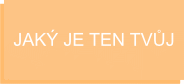

"Mám sen."Tak zněla první slova Martina Luthera Kinga. Byl to klíčový moment v oblasti lidksých práv, který změnil Ameriku i svět. Je na čase, měnit svět v každém jeho koutě. Já chci začit tam, kde je nám to blízké. Je to právě Internet kde trávíme většinu našeho času.
Backend developer (backend vývojář) je typ programátora, který se stará o zásadní logiku aplikace, webové stránky, softwaru nebo informačního systému – tedy kompletní backend (serverovou část). Samotný backend je neviditelným jádrem klientské aplikace, která z něj pouze čte data a pohybuje se v prostoru pomocí vystaveného API.

Frontend developer (frontend vývojář) je typ programátora, který se stará o webové stránky, software nebo informační systém z pohledu běžného uživatele/návštěvníka. Používá nejčastěji HTML, CSS a Javascript. Definuje rozmístění a kontext obsahu, často jeho práce přesahuje do designu systémů.